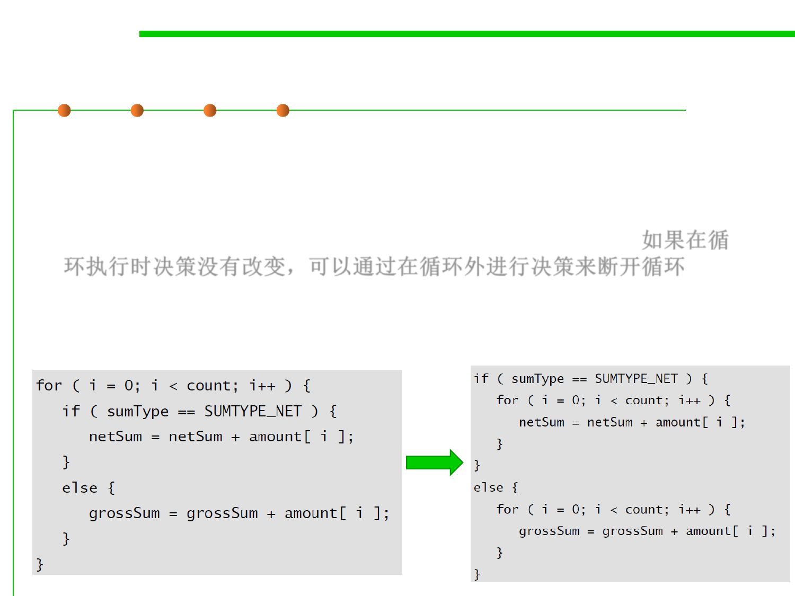

8.3 Code Tuning for Performance Optimization
Unswitching-将判断外提
▪ Switching refers to making a decision inside a loop every time it’s
executed.
▪ If the decision doesn’t change while the loop is executing, you can
unswitch the loop by making the decision outside the loop.如果在循
环执行时决策没有改变，可以通过在循环外进行决策来断开循环
▪ Usually this requires turning the loop inside out, putting loops inside
the conditional rather than putting the conditional inside the loop.